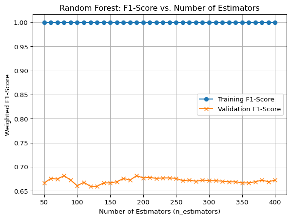
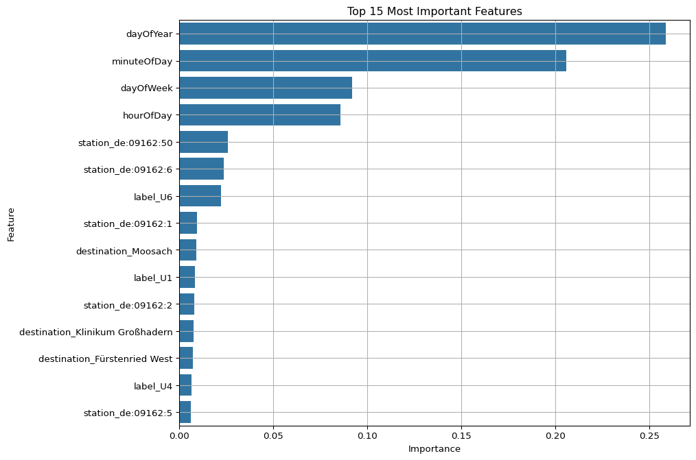
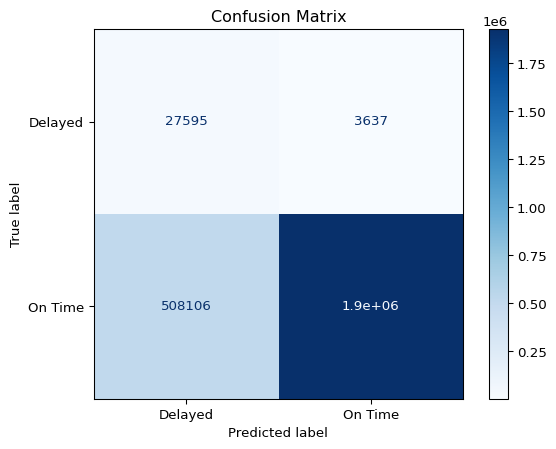

import pandas as pd
import numpy as np
import sklearn
import scipy
import matplotlib.pyplot as plt
from sklearn import preprocessing
from sklearn.model_selection import train_test_split
from joblib import Parallel, delayed
from sklearn.ensemble import RandomForestClassifier
from sklearn.model_selection import train_test_split
from sklearn.metrics import accuracy_score
import seaborn as sns
from sklearn.metrics import confusion_matrix, ConfusionMatrixDisplay
from sklearn.metrics import f1_score
from sklearn.metrics import classification_report, ConfusionMatrixDisplaysrgdghdtgh
sr gdrtg
mvg_data_orig = pd.read_parquet("../../data/subway_only_dedup.parquet")mvg_data = mvg_data_orig
mvg_data = mvg_data.drop(columns=['transportType', 'realtimeDepartureTime', 'timestamp'])
mvg_data = mvg_data[mvg_data.realtime]
mvg_data['onTime'] = mvg_data['delayInMinutes'] == 0
mvg_datetime = pd.to_datetime(mvg_data['plannedDepartureTime']).dt
mvg_data['hourOfDay'] = mvg_datetime.hour
mvg_data['minuteOfDay'] = mvg_datetime.hour * 60 + mvg_datetime.minute
mvg_data['dayOfWeek'] = mvg_datetime.day_of_week # Monday=0, Sunday=6
mvg_data['dayOfYear'] = mvg_datetime.day_of_year
# remove negative delay for bucketing
mvg_data = mvg_data[mvg_data['delayInMinutes'] >= 0]
bins = [float('-inf'), 2, np.inf]
labels = ['On Time', 'Delayed']
mvg_data['delayCategory'] = pd.cut(mvg_data['delayInMinutes'], bins=bins, labels=labels)
print("New binary class distribution:\n", mvg_data['delayCategory'].value_counts())New binary class distribution:
delayCategory
On Time 16244104
Delayed 208137
Name: count, dtype: int64features = mvg_data.drop(['delayInMinutes', 'onTime', 'plannedDepartureTime', 'delayCategory', 'realtime'], axis=1)
target = mvg_data['delayCategory']
features_encoded = pd.get_dummies(features)
print(f"Total rows in the full dataset: {len(features_encoded)}")
X_sample, _, y_sample, _ = train_test_split(features_encoded, target, train_size=5_000, random_state=0, stratify=target)
X_train_sample, X_test_sample, y_train_sample, y_test_sample = train_test_split(X_sample, y_sample, test_size=0.3, random_state=0)
X_val_sample, X_test_sample, y_val_sample, y_test_sample = train_test_split(X_test_sample, y_test_sample, test_size=0.5, random_state=0)
print(f"\nSampled training set size: {len(X_train_sample)}")
print(f"Sampled validation set size: {len(X_val_sample)}")
print(f"Sampled test set size: {len(X_test_sample)}")
X_train_full, X_test_full, y_train_full, y_test_full = train_test_split(features_encoded, target, test_size=0.3, random_state=0)
X_val_full, X_test_full, y_val_full, y_test_full = train_test_split(X_test_full, y_test_full, test_size=0.5, random_state=0)
print(f"\nFull training set size: {len(X_train_full)}")
print(f"Full validation set size: {len(X_val_full)}")
print(f"Full test set size: {len(X_test_full)}")
train_data_full = pd.concat([X_train_full, y_train_full], axis=1)
target_column_name = y_train_full.name
ontime_samples = train_data_full[train_data_full[target_column_name] == 'On Time']
delay_samples = train_data_full[train_data_full[target_column_name] == 'Delayed']
ontime_downsampled = ontime_samples.sample(n=len(delay_samples), random_state=0)
train_data_balanced = pd.concat([ontime_downsampled, delay_samples])
X_train_balanced = train_data_balanced.drop(columns=[target_column_name])
y_train_balanced = train_data_balanced[target_column_name]
print("\nOriginal full training class distribution:")
print(y_train_full.value_counts())
print("\nBalanced training class distribution:")
print(y_train_balanced.value_counts())Total rows in the full dataset: 16452241
Sampled training set size: 3500
Sampled validation set size: 750
Sampled test set size: 750
Full training set size: 11516568
Full validation set size: 2467836
Full test set size: 2467837
Original full training class distribution:
delayCategory
On Time 11371005
Delayed 145563
Name: count, dtype: int64
Balanced training class distribution:
delayCategory
On Time 145563
Delayed 145563
Name: count, dtype: int64def train_and_evaluate_rf(estimators, X_train, y_train, X_val, y_val):
"""Trains a Random Forest and returns both train and validation F1-scores."""
model = RandomForestClassifier(
n_estimators=estimators,
n_jobs=-1,
random_state=0
)
model.fit(X_train, y_train)
# Calculate weighted F1-score instead of accuracy
train_pred = model.predict(X_train)
train_f1 = f1_score(y_train, train_pred, average='weighted')
val_pred = model.predict(X_val)
val_f1 = f1_score(y_val, val_pred, average='weighted')
return estimators, train_f1, val_f1train_data_sample = pd.concat([X_train_sample, y_train_sample], axis=1)
target_column_name_sample = y_train_sample.name
ontime_samples_s = train_data_sample[train_data_sample[target_column_name_sample] == 'On Time']
delay_samples_s = train_data_sample[train_data_sample[target_column_name_sample] == 'Delayed']
ontime_downsampled_s = ontime_samples_s.sample(n=len(delay_samples_s), random_state=0)
train_data_balanced_s = pd.concat([ontime_downsampled_s, delay_samples_s])
X_train_sample_balanced = train_data_balanced_s.drop(columns=[target_column_name_sample])
y_train_sample_balanced = train_data_balanced_s[target_column_name_sample]
estimators_to_test = range(50, 401, 10)
results = Parallel(n_jobs=3)(
delayed(train_and_evaluate_rf)(n, X_train_sample_balanced, y_train_sample_balanced, X_val_sample, y_val_sample) for n in estimators_to_test
)training_results = {n: train_acc for n, train_acc, val_acc in results}
validation_results = {n: val_acc for n, train_acc, val_acc in results}params, train_f1_scores = zip(*sorted(training_results.items()))
plt.plot(params, train_f1_scores, label="Training F1-Score", marker='o')
params, val_f1_scores = zip(*sorted(validation_results.items()))
plt.plot(params, val_f1_scores, label="Validation F1-Score", marker='x')
plt.title("Random Forest: F1-Score vs. Number of Estimators")
plt.xlabel("Number of Estimators (n_estimators)")
plt.ylabel("Weighted F1-Score") # Update the y-axis label
plt.legend()
plt.grid(True)
plt.show()
best_parameter = max(validation_results, key=validation_results.get)
best_accuracy = validation_results[best_parameter]
print(f"The best parameter is: {best_parameter}")
print(f"With a validation accuracy of: {best_accuracy:.4f}")The best parameter is: 80
With a validation accuracy of: 0.6814final_model = RandomForestClassifier(
n_estimators=best_parameter,
n_jobs=-1,
verbose=1,
random_state=0
)
print(f"Training final model on {len(X_train_balanced)} samples...")
final_model.fit(X_train_balanced, y_train_balanced)Training final model on 291126 samples...[Parallel(n_jobs=-1)]: Using backend ThreadingBackend with 8 concurrent workers.
[Parallel(n_jobs=-1)]: Done 34 tasks | elapsed: 6.1s
[Parallel(n_jobs=-1)]: Done 80 out of 80 | elapsed: 12.5s finishedRandomForestClassifier(n_estimators=80, n_jobs=-1, random_state=0, verbose=1)In a Jupyter environment, please rerun this cell to show the HTML representation or trust the notebook.
On GitHub, the HTML representation is unable to render, please try loading this page with nbviewer.org.
Parameters
| n_estimators | 80 | |
| criterion | 'gini' | |
| max_depth | None | |
| min_samples_split | 2 | |
| min_samples_leaf | 1 | |
| min_weight_fraction_leaf | 0.0 | |
| max_features | 'sqrt' | |
| max_leaf_nodes | None | |
| min_impurity_decrease | 0.0 | |
| bootstrap | True | |
| oob_score | False | |
| n_jobs | -1 | |
| random_state | 0 | |
| verbose | 1 | |
| warm_start | False | |
| class_weight | None | |
| ccp_alpha | 0.0 | |
| max_samples | None | |
| monotonic_cst | None |
importances = final_model.feature_importances_
feature_names = X_train_full.columns
feature_importance_df = pd.DataFrame({'feature': feature_names, 'importance': importances})
feature_importance_df = feature_importance_df.sort_values(by='importance', ascending=False).head(15)
plt.figure(figsize=(10, 8))
sns.barplot(x='importance', y='feature', data=feature_importance_df)
plt.title('Top 15 Most Important Features')
plt.xlabel('Importance')
plt.ylabel('Feature')
plt.grid(True)
plt.show()
y_pred = final_model.predict(X_test_full)
print("Classification Report:")
print(classification_report(y_test_full, y_pred))
disp = ConfusionMatrixDisplay.from_estimator(
final_model,
X_test_full,
y_test_full,
cmap=plt.cm.Blues
)
disp.ax_.set_title('Confusion Matrix')
plt.show()[Parallel(n_jobs=8)]: Using backend ThreadingBackend with 8 concurrent workers.
[Parallel(n_jobs=8)]: Done 34 tasks | elapsed: 6.2s
[Parallel(n_jobs=8)]: Done 80 out of 80 | elapsed: 12.9s finishedClassification Report:
precision recall f1-score support
Delayed 0.05 0.88 0.10 31232
On Time 1.00 0.79 0.88 2436605
accuracy 0.79 2467837
macro avg 0.52 0.84 0.49 2467837
weighted avg 0.99 0.79 0.87 2467837
[Parallel(n_jobs=8)]: Using backend ThreadingBackend with 8 concurrent workers.
[Parallel(n_jobs=8)]: Done 34 tasks | elapsed: 6.4s
[Parallel(n_jobs=8)]: Done 80 out of 80 | elapsed: 12.7s finished